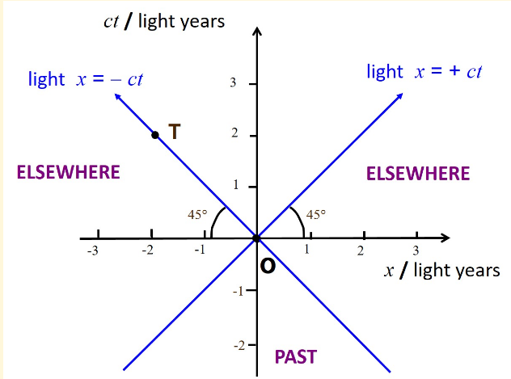
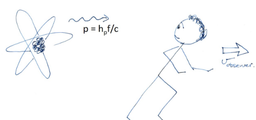
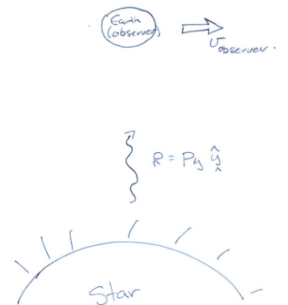
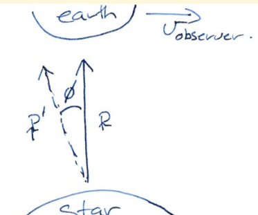
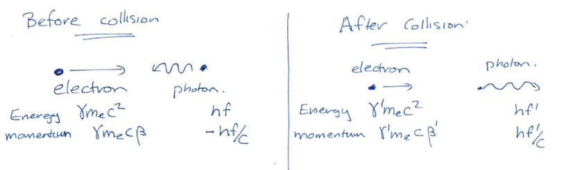
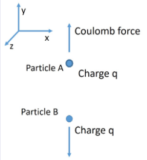
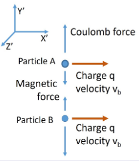
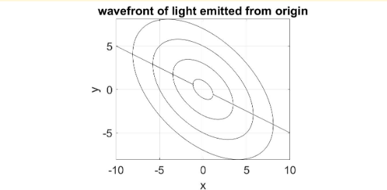
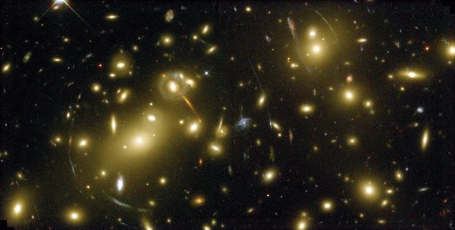

We have the Lorentz transforms for a frame moving in the \(x\) direction \[\begin{align} &x'=\gamma(v_\textrm{boost})[x-v_\textrm{boost}t]\\ &y'=y\\ &z'=z\\ &t'=\gamma(v_\textrm{boost})[t-xv_\textrm{boost}/c^2] \end{align}\] where \(\gamma(v_\textrm{boost})=1/\sqrt{1-v^2_\textrm{boost}/c^2}\) and \(v_\textrm{boost}\) is a constant. We also have the standard Galilean transforms \[\begin{align} &x'=x-v_\textrm{boost}t\\ &y'=y\\ &z'=z\\ &t'=t \end{align}\] Wave equation on one frame with \(v_\textrm{light}=c\) \[\left[\nabla^2-\frac{1}{c^2}\frac{\partial^2}{\partial t^2}\right]\mathbf{E}=\mathbf{0},\] we can use the chain rule with \(\partial_x=\partial_{x'}\partial_x(x')+\partial_{t'}\partial_x(t')\) and the similar one for \(t\) to find \[\left[\nabla'^2-\frac{1}{c^2}\frac{\partial^2}{\partial t'^2}\right]\mathbf{E'}=\mathbf{0},\]
A frame is an “Inertial Frame” if any isolated particle obeys Newton’s First Law. i.e. the particle remains at rest or travels in uniform motion along a straight line (i.e. \(v=\textrm{constant}\)). in absence of a force.
Space is homogeneous which leads directly to the Conservation of Momentum. Space is isotropic leads directly to the Conservation of Angular Momentum. Time is homogeneous leads directly to the Conservation of Energy.
Consider relationship between pair of events (i) simultaneous and (ii) occurring at the same location. \[t_1=t_2,\;\textrm{(simultaneous)}\qquad x_2=x_1\;\textrm{(same location)}\] We can apply Lorentz transforms and find that \(x_1'=x_2'\) and \(t_2'=t_1'\).
Events at same time, different location \[(t_1,x_1)=(0\textrm{s},0\textrm{m})\qquad (t_2,x_2)=(0\textrm{s},100\textrm{m})\] If we use \(v_b=c/2\implies\gamma=1.15\) \[\begin{align} &x_1'=0\\&x_2'=0 \end{align} \quad\textrm{and}\quad \begin{array}{l} x_2'=115\textrm{m}\\t_2'=-190\textrm{ns} \end{array}\] Events are no longer observed to be simultaneous! Ordering depends on sign of observer boost velocity.
Simultaneity can’t be preserved for separated events, but time ordering can (with restrictions). Take pair of events \((x_1,t_1)\) and \((x_2,t_2)\), with time and space separations. \[\Delta t\equiv t_2-t_1\qquad\Delta x\equiv x_2-x_1\] Assume \(\Delta t\gt0\) in one frame. Transform to a new frame with boost \(v_\textrm{boost}\). \[\Delta\bar{t}\equiv\bar{t}_2-\bar{t}_1=\gamma\left(\underbrace{\Delta t}_A-\underbrace{\frac{v_\textrm{boost}\Delta x}{c^2}}_B\right)\] if term \(A\) is greater than term \(B\), then time ordering is preserved \((\Delta\bar{t}\gt0)\).
Causal Events: Consider the maximum boost velocity \(v_\text{boost}\to c=c^-\), time ordering is preserved if \(\Delta x/\Delta t\lt c\). Events could be connected by object or signal with velocity less than \(c\).
Proper time is the time interval between events at the same location. \[\Delta t_\text{prop}\equiv t_2-t_1,\quad\Delta x\equiv x_2-x_2=0\] so in the frame with \(v_\text{boost}\) \[\Delta\bar{t}=\gamma\left(\Delta t_\text{prop}-\frac{v_\text{boost}\Delta x}{c^2}\right)=\gamma\Delta t_\text{prop}\] Since always have \(\gamma\geq1\), then all frames will have \(\Delta\bar{t}\gt\Delta t_\text{prop}\).
Proper time is the minimum time interval of all possible frames of reference.
Corollary: if we have a two events that are separated by \(\Delta x\neq 0\) and \(\Delta t\neq 0\), and are causal, with \(\Delta x/\Delta t\lt c\), then can always find a frame where the two events occur at the same location. Can therefore also find the proper time. \[\begin{align} \Delta\bar{x}&=\gamma(\Delta x-v_\text{boost}\Delta t)\\ &=0\;\;\text{when}\;\;v_\text{boost}=\Delta x/\Delta t \end{align}\] Can then use this boost to transform time interval \(\Delta t\to\Delta\bar{t}\equiv\Delta t_\text{prop}\).
Proper time is the time interval between events occurring at the same locations. Is the minimum time interval of all possible frames of reference. There is only a proper time if the events are causal. i.e. \(\Delta x/\Delta t\lt c\)
Proper distance interval is the distance between two objects (or events) measured at the same time.
We have \[(x_1,t_1),\;(x_2,t_2)\quad\text{AND}\quad t_2=t_2\] Similar to above we can work out that \(\Delta\bar{x}=\gamma\Delta x_\text{prop}\). As \(\gamma\geq 1\) have that >Proper distance interval is the minimum distance between two events. We have to be careful with calling this length. Length is intuitively the distance between two objects (or events) measured at the same time. Consider a moving car, if \(x_\text{front}\) and \(x_\text{back}\) are measured at different times, the length of the car is not simply \(x_\text{front}-x_\text{rear}\). If we have a proper distance \(L_\text{prop}\) for events \((x_1,t)\) and \((x_2,t)\): \[\Delta\bar{x}=\gamma(\Delta x-\Delta tv_\text{boost}/c^2)=\gamma L_\text{prop}\] We can extend this to measuring the length of a car with velocity \(v_\text{car}\), thus \[L_\text{moving}\equiv x_2-x_1,\quad\text{moving car},\quad t_1=t_2\] We transform to the frame where the car is stationary with \(v_\text{boost}=v_\text{car}\). \[\Delta\bar{x}=\gamma(\Delta x-0)\implies\Delta\bar{x}=\gamma L_\text{moving}\] hence \[L_\text{stationary}\equiv\Delta x=\gamma L_\text{moving}\]
Proper Length: Beware of thinking the spatial separation of two events is the same as a length. Proper length is the spatial separation of events or objects measured at the same time \(\implies\Delta\bar{x}=\gamma x_\text{proper}\)
Length Contraction: (of a moving object)\(L_\text{moving}=L_\text{stationary}/\gamma\) where both lengths of of an object are of 'ends' measured at the same time in each frame. The length of a moving object appears shorter than the stationary object.

Events both within the two vertical cones could potentially be connected by something travelling slower than \(c\), hence a proper time exists, and time ordering should be preserved for a boost less than \(c\). The path between these events are "time-like". A pair of events with at least one lying within the left or right cone could not be connected by something travelling slower than \(c\). Time ordering will be subjective, however a proper length will exist as there will be a frame where the events happen simultaneously. The path between such events is called "space-like". If events lie on the line path, they are "light-like". We can generalise this into 2D by revolving the diagram around the \(ct\) axis. We can do the same into 3D theoretically, however this requires higher dimensions.
The space-time interval \(ds^2\) is defined as \[ds^2=c^2dt^2-dx^2-dy^2-dz^2\] where where \(dt\) is the time interval and \(dx,\;dy,\;dz\) are lengths between events. \(ds^2\) is an invariant under Lorentz transform.
| Relation | Name |
|---|---|
| \(ds^2\gt 0\) | Events are time-like |
| \(ds^2\lt 0\) | Events are space-like |
| \(ds^2=0\) | Events are light-like |
If we have a velocity \(\mathbf{u}\) in one frame, and boost to another frame with \(\mathbf{v}_\text{boost}\), we need to work out the velocity \(\mathbf{u}'\). In Galilean work, we obviously have \(\mathbf{u}'=\mathbf{u}-\mathbf{v}_\text{boost}\). For S.R. we can use calculus \[u'_x=\frac{dx'}{dt'}\] with \(x'=\gamma(x-v_\text{boost}t)\) and \(t'=\gamma(t-v_\text{boost}x/c^2)\). Hence, \[u_x'=\frac{dx'}{dt'}=\frac{dx'}{dt}\left(\frac{dt'}{dt}\right)^{-1}=\frac{u_x-v_\text{boost}}{1-\frac{v_\text{boost}u_x}{c^2}}\] for a boost only in the \(x\) direction we can then derive \[u'_{y\;\text{or}\;z}=\frac{u_{y\;\text{or}\;z}}{\gamma(1-\frac{v_\text{boost}u_x}{c^2})}\] Note that \(u_x\) appears in the demonstrator for transformations of \(u_y,\;u_z\).
Ball has velocity \(v_\text{ball}\) , with respect to person. The person has velocity \(\bar{v}_\text{person}\), with respect to the tree. What is velocity of ball, \(\bar{v}_\text{ball}\) , with respect to the tree? Treat as a boost from stationary person, to moving person frame. Boost velocity is negative (opposite direction) of the persons velocity in the moving person frame. \[v_\text{boost}=-\bar{v}_\text{person}\] \[\implies\bar{v}_\text{ball}=\frac{v_\text{ball}-v_\text{boost}}{1-\frac{v_\text{ball}v_\text{boost}}{c^2}}=\frac{v_\text{ball}+\bar{v}_\text{person}}{1+\frac{v_\text{ball}\bar{v}_\text{person}}{c^2}}\]
In relativity we define a space-time 4-vector \[\mathbf{ds}=\pmatrix{cdt\\dx\\dy\\dz}\] but we define the normal, as the space time interval \[ds^2=c^2dt^2-dx^2-dy^2-dz^2\] \[ds^2=\mathbf{ds}^T\underline{\underline{\eta}}\;\mathbf{ds}=(cdt,dx,dy,dz)\pmatrix{1&0&0&0\\0&-1&0&0\\0&0&-1&0\\0&0&0&-1}\pmatrix{cdt\\dx\\dy\\dz}\] where \(\underline{\underline{\eta}}\) is the space time metric. The 4-vector \(\mathbf{ds}\) is invariant with Lorentz transform.
Velocity \(\frac{\mathbf{ds}}{dt}\) would not be invariant with the Lorentz transform because \(t\) changes with frame transformations. We can use the proper time \(d\tau\equiv\Delta t_\text{proper}\) and from before \(dt=\gamma d\tau\). We define four velocity as \[\mathbf{V}=\frac{\mathbf{ds}}{d\tau}=\pmatrix{\gamma c\\\gamma v_x\\\gamma v_y\\\gamma v_z}\] hence, we also have \[V^2\equiv|\mathbf{V}|^2=\mathbf{V}^T\underline{\underline{\eta}}\;\mathbf{V}=\gamma^2(c^2-v_x^2-v_y^2-v_z^2)=c^2\] As velocity of light \(c\) is unchanged by frame transformation, we have that \(V^2\) is a Lorentz invariant.
We can perform a Lorentz transform on \(\mathbf{ds}\) in the following way \[\mathbf{ds}'=\underline{\underline{L}}\;\mathbf{ds}\quad\text{where}\quad\underline{\underline{L}}=\pmatrix{\gamma&-\beta\gamma&0&0\\-\beta\gamma&\gamma&0&0\\0&0&1&0\\0&0&0&1}\] So \[\pmatrix{ct'\\x'\\y'\\z'}=\pmatrix{\gamma(ct-\beta x)\\\gamma(x-\beta ct)\\y\\z}\] We can also apply this matrix to \(\mathbf{V}\): \[\pmatrix{\bar{\gamma}c\\\bar{\gamma}\bar{v}_x\\\bar{\gamma}\bar{v}_y\\\bar{\gamma}\bar{v}_z}=\pmatrix{\gamma\gamma_bc(1-v_bv_x/c^2)\\\gamma\gamma_b(v_x-v_b)\\\gamma v_y\\\gamma v_z}\] hence: \[\bar{\gamma}=\gamma\gamma_b(1-v_bv_x/c^2)\] where in both, subscript \(b\), (\(_b\)) refers to the boost of that variable.
As with space-time we can create a 4-vector for energy and momentum \[\mathbf{P}=\pmatrix{E/c\\p_x\\p_y\\p_z}=\pmatrix{E/c\\\mathbf{p}}\] as with the norm of \(\mathbf{ds}\) \[|\mathbf{P}|^2=E^2/c^2-\mathbf{p}^2=(\gamma mc)^2-\mathbf{p}^2=m^2c^2\] (using the \((+,-,-,-)\) metric). This is the Energy–momentum relation. As expected we find that \(|\mathbf{P}|^2\) is conserved under Lorentz transformation and is invariant.
Again we can use the Lorentz matrix for transforms \[\mathbf{P}'=\underline{\underline{L}}\mathbf{P}\implies\pmatrix{E'/c\\p_x'\\p_y'\\p_z'}=\pmatrix{\gamma_b(E/c-\beta_b p_x)\\\gamma_b(p_x-\beta_b E/c)\\p_y\\p_z}\] The magnitude of momentum three vector is \[\begin{align}|\mathbf{p}|=\gamma m|\mathbf{v|}\quad\text{for massive particles}\\|\mathbf{p}|=E/c\quad\text{for massless particles}\end{align}\] The latter result can be derived using the Energy-Momentum relation.

For a photon travelling in the \(x\) direction, we have \[\mathbf{p}_\text{photon}=\pmatrix{p\\0\\0}=\pmatrix{hf/c\\0\\0}\] Boost from from emitter to observer moving away from emitter. \(p_x\) positive, observer moving away with \(v_\text{observer}\gt 0\). \[\mathbf{P}'=\underline{\underline{L}}\mathbf{P}=\pmatrix{hf'/c\\p_x'\\p_y'\\p_z'}=hf/c\pmatrix{\gamma_b-\beta_b\gamma_b\\\gamma_b-\beta_b\gamma_b\\0\\0}\] hence \[\begin{align} f'&=f\gamma_b(1-\beta_b)=f\frac{1-\beta_b}{\sqrt{1-\beta_b^2}}\\ &=f\frac{(1-\beta_b)}{\sqrt{(1+\beta_b)(1-\beta_b)}}\\ &=f\sqrt{\frac{1-\beta_b}{1+\beta_b}} \end{align}\] We have
Longitudinal (radial) doppler shift for photons\[\boxed{f'=f\sqrt{\frac{1-\beta_b}{1+\beta_b}}}\]frequency decrease for receding observer

For a photon travelling in the \(y\) direction, we have \[\mathbf{p}_\text{photon}=\pmatrix{0\\p\\0}=\pmatrix{0\\hf/c\\0}\] Boost from emitter to observer, taking both boost \(\beta_b\) and photon momentum \(p_y\) to be positive. Boost is in the \(x\) direction. \[\mathbf{P}'=\underline{\underline{L}}\mathbf{P}=\pmatrix{hf'/c\\p_x'\\p_y'\\p_z'}=hf/c\pmatrix{\gamma_b\\-\beta_b\gamma_b\\1\\0}\] Hence \[\boxed{f'=\gamma_bf}\] Angle from the perpendicular:

\[\tan\phi=\left|\frac{p_x'}{p_y'}\right|=\beta_b\gamma_b\]
Consider a constant force, acting solely in the \(x\)-direction. What are the dynamics of the object driven by this force? \[\mathbf{F}=\frac{d\mathbf{p}}{dt}=k\mathbf{\hat{e}}_x\] where \(k=\text{constant}\). \[p_x=kt+\alpha_\text{const}=\gamma(t)mv(t)\] where integration constant \(\alpha_\text{const}=p_x(t=0)\equiv p_0\). We can expand and rearrange to find \[v_x=\frac{kt}{m^2\sqrt{1+k^2t^2/m^2c^2}}\] As \(t\to\infty\), then \(v_x\to c\).
Inverse Compton scattering

The normal approach would be to equate total energy and momentum before and after the collision, but this is a lot of algebra. The alternative approach is to use the 4-vectors and equate them \[\mathbf{P}_e+\mathbf{P}_\nu=\mathbf{P}'_e+\mathbf{P}'_\nu\] rearrange and take magnitude \[\begin{align}|\mathbf{P}_e'|^2&=|\mathbf{P}_e+\mathbf{P}_\nu-\mathbf{P}'_\nu|^2\\&=|\mathbf{P}_e|^2+|\mathbf{P}_\nu|^2+|\mathbf{P}'_\nu|^2+2\mathbf{P}_e\mathbf{P}_\nu+2\mathbf{P}_e\mathbf{P}'_\nu+2\mathbf{P}'_\nu\mathbf{P}_\nu\end{align}\] The magnitude of the 4-momentum is invariant (i.e., \(|\mathbf{P}_e|^2=m^2c^2\) before and after the collision), which lets us equate terms without worrying about frame-dependent quantities. \[|\mathbf{P}'_e|^2=|\mathbf{P}_e|^2=m^2c^2\qquad\qquad|\mathbf{P}'_\nu|^2=|\mathbf{P}_\nu|^2=0\] Hence \[0=2\mathbf{P}_e\mathbf{P}_\nu+2\mathbf{P}_e\mathbf{P}'_\nu+2\mathbf{P}'_\nu\mathbf{P}_\nu\] This notation is strictly wrong, but its more like a shorthand. Remember we must use the space-time metric for the 4-vector products \[\mathbf{P}_e\mathbf{P}_\nu=(\gamma m_ec,\;\gamma m_ec\beta,\;0,\;0)\underbrace{\pmatrix{1&0&0&0\\0&-1&0&0\\0&0&-1&0\\0&0&0&-1}}_{\underline{\underline{\eta}}}\pmatrix{E_\nu/c\\-E_\nu/c\\0\\0}\] We can evaluate this to find \[\gamma m_eE_\nu(1+\beta)-\gamma m_eE'_\nu(1-\beta)-2E_\nu E'_\nu/c^2=0\] If we solve for \(E'_\nu\): \[E'_\nu=\frac{E_eE_\nu(1+\beta)}{2E_\nu+\gamma m_ec^2(1-\beta)}\approx 4\gamma^2E_\nu\quad\text{for large}\;\gamma.\]
As we know from electromagnetism \[\begin{align} \nabla\times\mathbf{B}&=\mu_0\epsilon_0\frac{\partial\mathbf{E}}{\partial t}+\mu_0\mathbf{J}\\ &=\mu_0\epsilon_0\frac{\partial\mathbf{E}}{\partial t}+\mu_0(\rho\mathbf{v}_q) \end{align}\] where \(\rho\) is (volume) charge density and \(\mathbf{v}_q\) is charge carrier velocity. However, velocity is subjective!
Imagine we have two charges in a frame as so

Each particle produces a coulomb field at the other particles location. They repel each other. Now lets boost (\(-v_b\)) in the \(x\) direction into another frame

Motion of particle B creates magnetic field at particle A. Biot-Savart law: attractive force due to motion in B-field. There is an additional attractive force (\(\mathbf{v}\times q\mathbf{B}\)). How do we unify what will happen? Solution lies in unification of electric fields and dynamics, and magnetic fields and dynamics, into electromagnetism. Reminder: We have \[\begin{align} &\frac{\partial}{\partial t}=\gamma\frac{\partial}{\partial t'}-\gamma v\frac{\partial}{\partial x'}\\ &\frac{\partial}{\partial x}=-\gamma\frac{v}{c^2}\frac{\partial}{\partial t'}+\gamma\frac{\partial}{\partial x'}\\ \end{align}\] We can consider the transform of the divergence of an electric field (in a region with no sources). \[\nabla\cdot\mathbf{E}=\mathbf{0}\to(\nabla\cdot\mathbf{E})'=\mathbf{0}\] Hence the partially transformed equation is: \[\left\{-{\color{orange}\gamma}\frac{v}{{\color{orange}c^2}}{\color{orange}\frac{\partial}{\partial t'}}+\gamma\frac{\partial}{\partial x'}\right\}{\color{orange}E_x}+\frac{\partial E_y}{\partial y'}+\frac{\partial E_z}{\partial z'}=0\] ...This doesn’t look like a spatial divergence equation because it includes a time derivative. Will return to it. We shall now consider the Ampere-Maxwell's law (again unsourced) \[\nabla\times\mathbf{B}=\frac{1}{c^2}\frac{\partial\mathbf{E}}{\partial t}\] (where \(1/c^2=\mu_0\epsilon_0\)). Lets now look at the \(x\) component: \[\frac{\partial B_z}{\partial y}-\frac{\partial B_y}{\partial z}=\frac{1}{c^2}\frac{\partial E_x}{\partial t}\] we transform the derivatives \[\frac{\partial B_z}{\partial y'}-\frac{\partial B_y}{\partial z'}={\color{orange}\frac{1}{c^2}}\left\{{\color{orange}\gamma\frac{\partial}{\partial t'}}-\gamma v\frac{\partial}{\partial x'}\right\}{\color{orange}E_x}\] We now have a relationship between time and spatial derivatives. We can combine these two equations and rearrange \[\frac{\partial E_x}{\partial x'}+\gamma\frac{\partial}{\partial y'}(E_y-vB_z)+\gamma\frac{\partial}{\partial z'}(E_z+vB_y)=0\] almost looks like the \(\nabla\cdot\mathbf{E}=\mathbf{0}\) in the new \((x',y',z'\)) frame. If we have the electric fields in the new frame given by \[\boxed{\begin{align} &E'_x=E_x\\ &E'_y=\gamma(E_y-vB_z)\\ &E'_z=\gamma(E_z-vB_y) \end{align}}\] then we do get the hoped for (and observationally required), invariance in Maxwell's divergence equation. We can do the same procedure for \(\nabla\cdot\mathbf{B}=\mathbf{0}\) and \(\nabla\times\mathbf{E}=-\partial_t(\mathbf{B})\) to find that \[\boxed{\begin{align} &B'_x=B_x\\ &B'_y=\gamma\left(B_y-\frac{v}{c^2}E_z\right)\\ &B'_z=\gamma\left(B_z-\frac{v}{c^2}E_y\right) \end{align}}\] Observers differ on identification of electric or magnetic field but agree on trajectories (effect of forces) in space-time. If we apply these to the two particle problem earlier (and then use \(\mathbf{F}=q\mathbf{E}+q\mathbf{v}\times\mathbf{B}\)) we find that the transverse forces are actually different. \[\begin{align} &\underline{\text{Repulsive force between stationary electrons:}}\\ &F_y=\frac{q_Aq_B}{4\pi\epsilon_0 r^2}\\ &\underline{\text{Repulsive force between moving electrons:}}\\ &F_y=\frac{q_Aq_B}{4\pi\epsilon_0 r^2}\frac{1}{\gamma}\\ \end{align}\]
General Relativity extends special relativity to include gravitation through non-inertial frames acceleration. \[\begin{array}{l}\text{Space-time curvature }\\\text{at event}\;(\mathbf{x},t)\end{array}\quad=\quad\begin{align}&\text{mass/energy density}\\&\text{and momentum flux}\\&\text{at the same event.} \end{align}\] Mathematically this is \[R_{ik}-\frac{1}{2}g_{ik}R=-\frac{8\pi G}{c^4}T_{ik}\] where \(R_{ik}\) and \(R\) are also functions of the metric \(g_{ik}\), and \(T_{ik}\) is the energy-momentum tensor, and \(G\) is the gravitational constant.
In flat spacetime, an interval is given by \[\begin{align} ds^2&=c^2dt^2-dx^2-dy^2-dz^2=\text{constant}\\ &=c^2dt^2-dr^2-r^2d\theta^2-r^2\sin^2\theta \;d\phi^2 \end{align}\] which is called the "metric" defining the geometry of the local inertial frame. In curved spacetime the metric is generalised by adding four weighting factors (\(g_{tt},g_{xx},g_{yy},g_{zz}\)) for the terms above, and another twelve factors (\(g_{tx},\ldots,g_{xy},\ldots\)) for cross products like \(dtdx\) and \(dxdy\). \[ds^2=\sum_\mu\sum_\nu g_{\mu\nu}dx_\mu dx_\nu,\qquad\mu,\nu=0,1,2,3\] where \(dx_0=cdt,\;dx_1=dx,\;dx_2=dy,\;dx_3=dz\). Hence: \[\underline{\text{Flat space time}:}\qquad\eta=\pmatrix{1&0&0&0\\0&-1&0&0\\0&0&-1&0\\0&0&0&-1}\] \[\underline{\text{Curved space time}:}\qquad g=\pmatrix{g_{tt}&g_{tx}&g_{ty}&g_{tz}\\ g_{xt}&g_{xx}&g_{xy}&g_{xz}\\ g_{yt}&g_{yx}&g_{yy}&g_{yz}\\ g_{zt}&g_{zx}&g_{zy}&g_{zz}}\] In General Relativity the metric is symmetric, i.e. \(g_{\mu\nu}=g_{\nu\mu}\), which means that it has only 10 independent components. When we apply these matrices to \(ds^2\) we get different "stretches" of the coordinate dimensions. For example \[g=\pmatrix{1&0&0\\0&-1&1/2\\0&1/2&-1}\] \[\implies ds^2=ds\;g\;ds^T=c^2dt^2-dx^2-dy^2-dxdy\] \[\text{for light:}\;(ds^2=0)\implies\quad c^2dt^2=\frac{1}{\sqrt{2}}dx^2+dy^2-dxdy\]So for a spherically emitting light source:

In 1916 Schwarzschild found the first exact solution, the metric at distance \(r\) outside a spherically symmetric mass \(m\) was \[ds^2=\left(1-\frac{2mG}{c^2r}\right)c^2dt^2-\frac{dr^2}{(1-2mG/c^2r)}-r^2d\theta^2-r^2\sin^2\theta \;d\phi^2\] rather than the flat spacetime metric in the above section. We get flat spacetime if \((2mG /c^2r)\to 0\) which requires \(G=0\) or \(m=0\), or \(r\to\infty\). If \((2mG/c^2r)\lt\lt 1\) we derive Newtons laws of motion. A photon's light-like spacetime interval has \(ds^2=0\), for radial photon trajectories the space-time interval simplifies as \(d\theta=d\phi=0\). We can therefore find that photon travels with velocity: \[\frac{dr}{dt}=\left(1-\frac{2mG}{c^2r}\right)c\] Light speed is not constant in a non-inertial frame of curved space!!! Effects and consequences:
This curvature is the same curvature discussed in PHYS265, so the Friedmann equation applies, and the flatness problem. General relativity is widely tested and observed, BUT it does not agree with quantum mechanics.
Evidence for general relativity: A ray of light from a star grazing past the Sun is deflected by 1.75 arcseconds. This was observed in the 1919 total eclipse. Furthermore gravitational lensing is often seen now.
